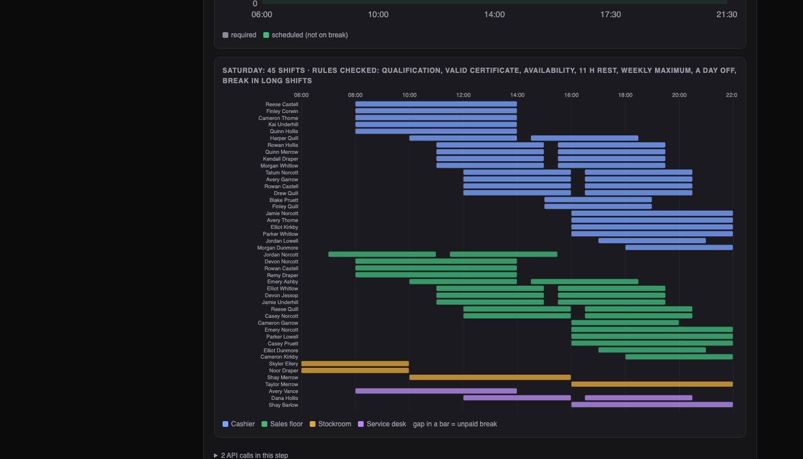
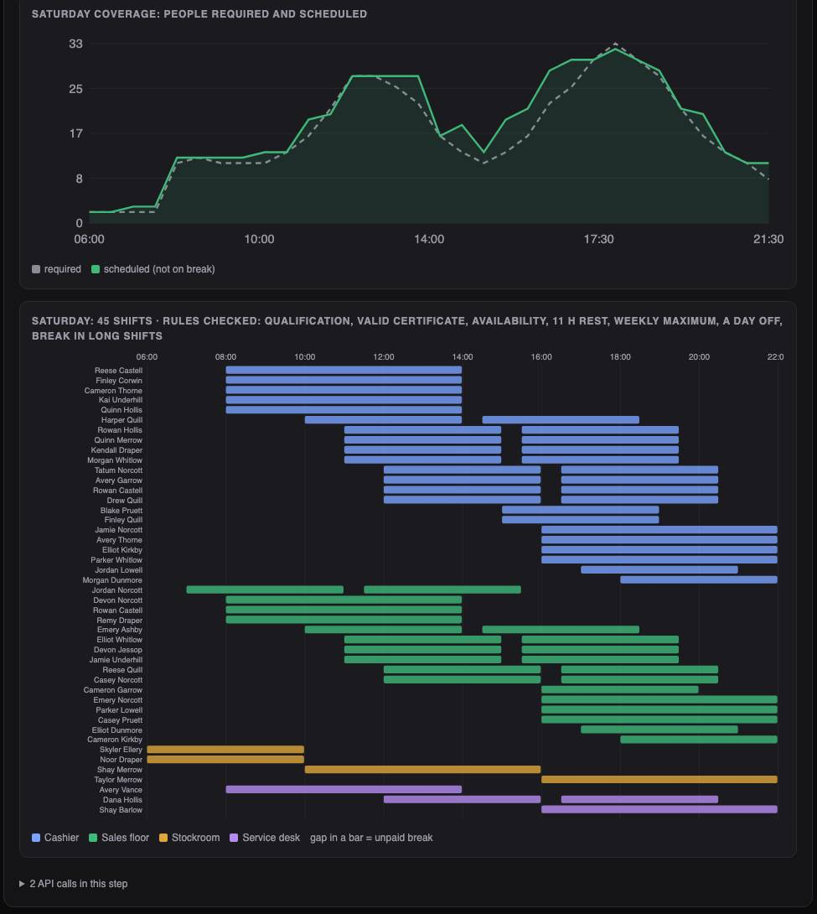
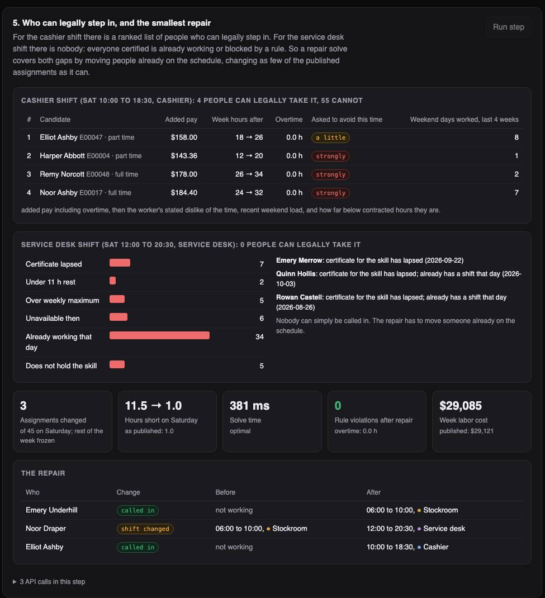

Python · Operations research · 2026-10
Who Works When? A Week's Schedule That Obeys Every Rule, and Survives Two Sick Calls
A scheduling system for hourly staff. For one invented store it forecast next week's demand, built a legal schedule for 61 people that cost 14% less than a careful first-fit schedule while covering 99.9% of demand against 92.8%, and when two people called in sick on the busiest evening it closed the gap in under half a second by changing 3 of 45 assignments.

Built from a written blueprint as one vertical slice, on a synthetic retailer: 50 stores, 5,000 workers and two years of sales are generated. The labor rules are a generic pack (rest hours, weekly maximum, breaks), not any real jurisdiction's law. The 14% saving is against a simple first-fit schedule that an experienced manager would beat, so read it as an upper estimate. Only stores of 61 to 69 workers were solved. Not built: time zones, timeclock data, a worker app, Kafka, Terraform, single sign-on.
01 — The problem
A store manager with 61 hourly staff has to decide who works when next week. Each person has skills, some with certificates that expire, hours they cannot work, hours they would rather not, a contract, and a legal right to rest. Demand changes every half hour and jumps when there is a promotion. Then on Saturday afternoon two people call in sick. Can software forecast the demand, build a schedule that breaks no rule at the lowest cost, and fix it with the least disruption when people drop out?
Blueprint 9 of ten in an enterprise build book, built as the demo scenario end to end.
02 — What I built
A Python service on PostgreSQL with a background worker and a web page, started by one docker compose up.
- Forecast: transactions per half hour for the coming week, turned into people needed per skill.
- Rule pack: one file that answers "is this legal?" for everything else.
- Schedule solver: picks every shift for the week at once, at the lowest cost that breaks no rule.
- Call-out repair: covers a gap while changing as few published shifts as possible.
- Shift marketplace: a worker offers a shift; a colleague's claim is checked against every rule before it moves.
- Fairness report: overtime, weekend load and contracted hours, before and after.
03 — How it was built
- 01
Forecast the half hours, not the day
The store's own history shows how much a promotion lifts sales (21%) and how much rain lowers them (11%). Those effects are removed from the past, the last six same-weekdays are averaged slot by slot, and the coming day's promotion or rain is put back in. Next Saturday has a promotion and last Saturday did not: the forecast is 3,805 transactions where copying last week says 3,025. That is 33 people at the peak, not 28.
same = clean[weekday == d][-WEEKS:] out.append(same.mean(axis=0) * trend * (up if p else 1.0) * (damp if r else 1.0)) - 02
One checker for every question of legality
Qualification, a valid certificate, availability, one shift a day, 11 hours of rest, a weekly maximum, a day off, a break in long shifts. These live in one file. The solver turns them into constraints, and then the same file re-checks the solver's answer from scratch, ranks who can replace a sick colleague, and decides whether a shift swap is allowed.
if nxt and (SLOTS_PER_DAY - (s["start"] + s["length"])) + nxt["start"] < REST_SLOTS: out.append(("REST_11H", {...})) - 03
21,182 yes or no decisions
Each decision is "does this person work this shape of shift, in this skill, on this day". The rules are hard limits. Everything else is a cost in dollars: wages and overtime, a person-half-hour short of demand ($60), hours at times someone asked to avoid, contracted hours not given, weekend shifts for people who have just worked several. The solver stops after 20 seconds, within 0.3% of the best possible answer.
u = m.NewIntVar(0, need, "") m.Add(sum(cover.get(key, [])) + u >= need) cost_terms.append(u * W_SHORT) - 04
Repair by changing as little as possible
When two people call out, solving the day again from nothing would cover the gap and also move 34 other people's shifts. So the repair freezes the rest of the week and charges $30 for every assignment it changes. In 25 trials it closed the gap by changing a median of 2.
m.Minimize(W_SHORT * sum(shorts) + change_weight * sum(changed) + sum(terms)) - 05
The saving had a cost, so it is reported
The store needs about 1,250 staff-hours and its people are contracted for about 1,600. The solver stops paying for hours nobody needs, and those were somebody's expected hours. The first version piled that shortfall onto a few people: 8 of 61 got less than half their contract. Making the penalty three times steeper below half spread it out (2 of 61) for about 1% more cost. The report shows the shortfall beside the saving.
m.Add(deep >= int(w["target_hours"]) - total) # half-hours below 50% of contract cost_terms += [short * W_TARGET, deep * 2 * W_TARGET]
04 — Results
One store, one week, 61 people, against a careful first-fit schedule under the same rules:
| Measure | Solver | First-fit |
|---|---|---|
| Labor cost | $29,121 | $33,908 |
| Demand covered | 99.9% | 92.8% |
| Hours beyond demand | 122.5 | 400 |
| Hours at times people asked to avoid | 99 | 403 |
| Rule violations | 0 | 0 |
| Hours below contract (worse) | 264 | 128 |

Two sick calls in the Saturday evening peak. Hours short went from 1.0 to 11.5. Four people could legally take the cashier shift. Nobody could take the service desk shift: of 59 others, 34 were already working and 7 had a lapsed certificate. The repair moved one certified person from a morning stockroom shift, called two people in, and was back to 1.0 hours short in 0.4 seconds with 3 of 45 assignments changed.

A shift swap. The first colleague to claim an offered service desk shift was refused automatically (certificate lapsed). The second passed all 8 rules and the shift moved.
Across more stores and weeks:
- Forecast error on daily totals, 50 stores over 12 weeks: 4.4%, against 10.3% for copying last week. Better in all 50 stores.
- Six stores scheduled: labor cost 15.2% below first-fit, 5.5 hours short of demand against 428.5.
- A schedule built on the forecast was 8.5 hours short against the demand that actually arrived; one built on a copy of last week was 22.5 hours short, 16 of them on the promotion Saturday.
Checks. 34 tests, including: every rule firing on a case built to break it, the stored schedule re-checked from database rows with no help from the solver, a refused claim moving nothing, a repeated call-out request recorded once, and one company unable to see another's workers or schedules.
05 — What I'd do next
- Real labor law for one place: break timing windows, rules for minors, premiums for late schedule changes.
- Larger stores, which need the week split into smaller problems.
- Compare against schedules real managers wrote, since first-fit is easier to beat.